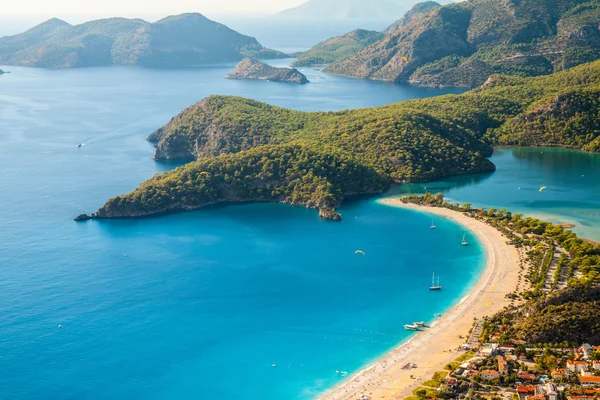
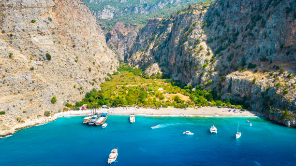
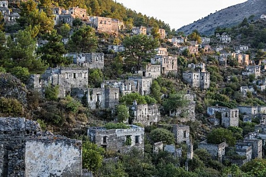
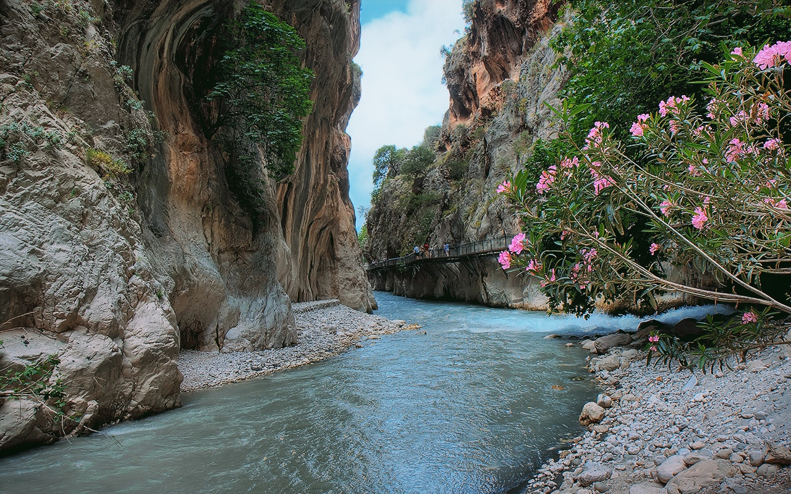

Bu gezi rehberi sitesi, Türkiye'nin en güzel 5 yerini tanıtmaktadır.
Muhteşem bir lagün ve berrak denizi ile ünlü olan Ölüdeniz, dünyanın en güzel plajlarından biridir.
Kelebekler Vadisi, doğal güzelliği ve yüksek kayalıklarıyla görenleri büyüler.
Tarihi dokusu ve terk edilmiş evleri ile ünlü olan Kayaköy, bir zamanlar Rum köyü olarak kullanılmıştır.
Saklıkent, muhteşem doğal manzarası ve macera dolu trekking rotalarıyla ziyaretçilerini cezbeder.
